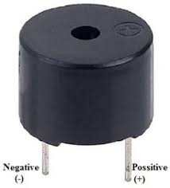

THE INSTRUMENTS USED IN THE SYSTEM


For instance, in the year 2018, the entertainment and media industry in the United States was approximately worth US$678 billion and by the end of 2020, it grew to over US$720 billion. And research states that by the year 2023, the entertainment industry across the world is expected to be worth US$2.6 trillion. So, these figures clearly state that the immense growth in this industry.
How Does this E-Booking Mobile App Work?
This E-booking App can tremendously benefit the entertainment industry, creative, and arts industry, by offering them easy access to the talent and book them for the events. The app solution allows recruiters to administer and the artists to get easily hired through the app or web-based dashboards. Hence, it goes without saying that these apps have made things a lot easier in today’s world as it comes to booking artists.
Earlier, this tiring and time-consuming process took weeks and months to hire the artists, however, now this can be attained with just a few clicks in a lot lesser time. Here, everything can be handled with the app itself, be it searching for the right artists for any event, interacting with them, booking them, and making payments, the app does it all easily and efficiently.
Popular Categories Of Artists & Entertainers
E-Booking app categorises various artists according to the genre of music they sing, to ease search of musicians
Music category

Artist Profile

What Are The Benefits Of this App?
Next, moving on to the benefits, these apps benefit entertainment coming from different fields, be it the artists, entertainers, performers, or event managers. It is the one app for all of them. Artist Booking app is the easiest way to book artists for the events, and most of these solutions offer easy access to the dancers, singers, DJs, Bands, comedians, etc, hence giving multiple choices for booking. Time has great value and these apps allow you to have a lot of time that can be spent on other crucial tasks that need your supervision, instead of spending your valuable time finding good artists. After all, for this task, it is best to rely on something much-more capable, i.e. an app that can search the best artists around for you. This effective system allows you to make more money while working less. Among its many benefits, a few are:
- 24×7 Access:
Today most people don’t like making appointments over the phone and having an app allows to book an appointment easily online and it provides a virtual office that is open 24×7 and 365 days of a year, with no vacations, or breaks, or holidays.
- Fewer Missed Appointments:
- Easy access to more information:
- Ensures Security:
- Saves Money:
- Register & Create Profile.
- Artist updates.
- View artists and enter.
- View available Artists & Performers.
- Sort and filter artists based on categories, price, and ratings.
- Select event type.
- Select event date and location.
- Chat with artists.
- Multiple payment methods.

Hip Hop category
- Share event location.
- Give reviews and ratings to artists.
- Find and add new talented artists to the platform
- Connect the clients with artists as per their requirements
- Moderating and screening new artists before connecting them with client
- Managing payments
- Managing reviews and feedback
- Optimizing the platform as per the needs of event organizers, clients, and artists.
- Social Signup & Login
- In-app Chat
- CMS Integration
The Features Of E-Booking App
Features and Tasks of Administrator in An Artist Booking App
Advanced Features of Artists E-Booking app
This app functionality allows the users to register to the app easily via their social networking accounts. Hence, this saves them from the long registration process.

This is quite a useful functionality again as often people find it convenient to communicate over text than do it on the phone, and in-app chat functionality allows them to do just that.
Content Management System (CMS) allows the app owners to actively manage the content on the Artist booking apps
Advanced Search feature
Our advanced search feature helps you find the right artists that suites your business/personal events,such as company
party,birthday parties,graduation party,marriage ceremonies and any other ceremony.